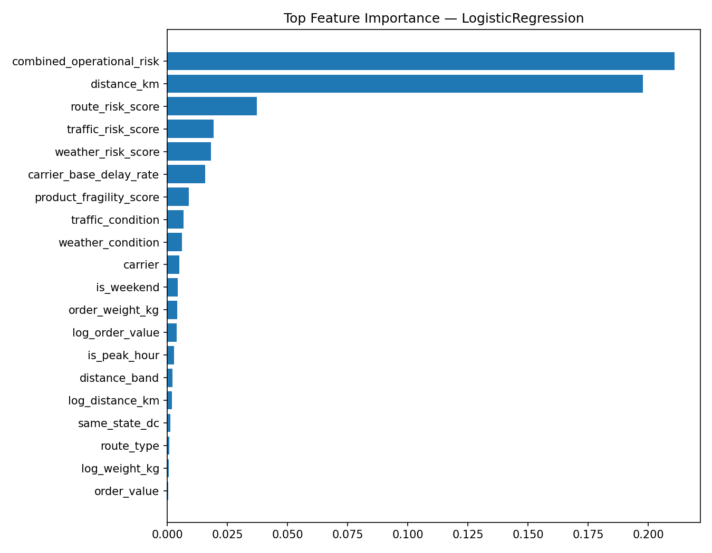
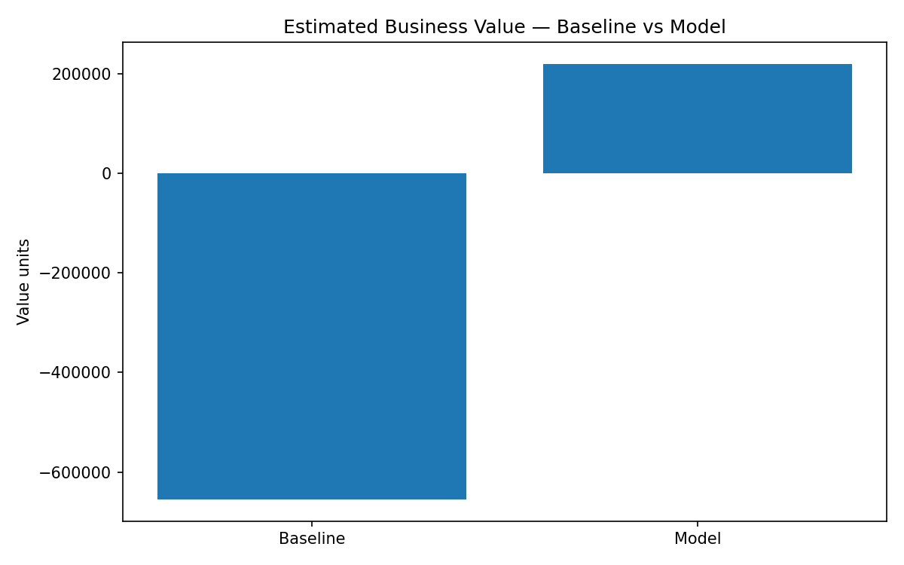

Real-time e-commerce · ML production simulation
End-to-end CrewAI data science pipeline for delivery delay risk prediction.
| Model | ROC AUC | AP | Precision | Recall | F1 |
|---|---|---|---|---|---|
| LogisticRegression | 0.7334 | 0.5502 | 0.2760 | 0.9971 | 0.4323 |
| HistGradientBoosting | 0.7300 | 0.5445 | 0.2730 | 1.0000 | 0.4289 |
| LightGBM | 0.7271 | 0.5418 | 0.2730 | 1.0000 | 0.4289 |
| RandomForest | 0.7269 | 0.5407 | 0.2734 | 1.0000 | 0.4294 |
| ExtraTrees | 0.7263 | 0.5399 | 0.2732 | 0.9998 | 0.4291 |
| XGBoost | 0.7265 | 0.5374 | 0.2759 | 0.9974 | 0.4323 |
| ID | Hypothesis | Verdict | Lift |
|---|---|---|---|
| H1 | Severe traffic increases delay risk. | TRUE | 1.5562906645737027 |
| H2 | Storm weather increases delay risk. | TRUE | 1.7625755170209185 |
| H3 | Remote routes increase delay risk. | TRUE | 1.4142718452972958 |
| H4 | NationalPost has higher delay risk than average. | FALSE | 1.110164650205598 |
| H5 | Very long distance orders have higher delay risk. | TRUE | 2.4160053001806445 |
| H6 | Weekend orders have higher delay risk. | TRUE | 1.1653995283043164 |
| H7 | Peak-hour orders have higher delay risk. | FALSE | 1.0765903138819122 |
| H8 | Orders estimated above promised SLA have higher delay risk. | TRUE | 1.693489718302917 |
| H9 | Very heavy orders have higher delay risk. | TRUE | 1.6259680902551887 |
| H10 | Different states have materially different delay rates. | TRUE | 2.310367512463595 |


# Business Performance — Delay Risk Model
Best model: **LogisticRegression**
Threshold: **0.18976844618958397**
## Cost assumptions
- False negative cost: 120.0
- False positive handling cost: 15.0
- True positive value captured: 80.0
## Estimated Value
metric value
true_positives 5442.00
false_positives 14275.00
false_negatives 16.00
true_negatives 267.00
model_value 219315.00
baseline_value -654960.00
incremental_value 874275.00
incremental_value_per_1000_orders 43713.75
The model improves the simulated business value by **874,275.00**, equivalent to **43,713.75 per 1,000 orders**.